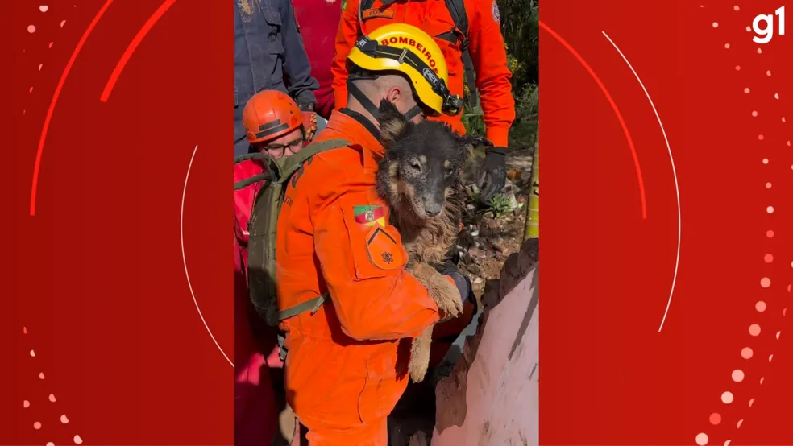

Bombeiros resgatam cachorra de escombros em Maquiné após ciclone no RS
 O Corpo de Bombeiros de Maquiné resgatou uma cachorra de escombros, após a passagem do ciclone extratropical que causou estragos no estado. O vídeo que mostra o resgate foi postado neste domingo (18), pelo governador do RS, Eduardo Leite.
Prefeituras disponibilizam canais de contatos para atingidos por temporal; saiba como ajudar
"Nossos heróis do Corpo de Bombeiros resgatando a cadelinha Laila, em Maquiné. Somos muito gratos a todos os esforços empregados para salvar todas as vidas possíveis!", postou
A cachorra Laila pertencia à Agnes Schmeling, que faleceu soterrada após deslizamento da casa.
A cidade é uma das mais atingidas pelo ciclone. Três pessoas morreram, e até a última atualização dessa matéria, tinha 200 desabrigados e 100 desalojados, segundo a Defesa Civil do RS. Na quinta-feira (15), o prefeito publicou um apelo por vídeo pedindo que as pessoas não saíssem de casa.
Para verificar a matéria completa com esta notícia, acesse o link.